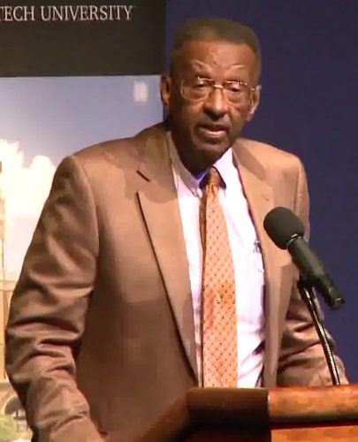

这个人

Walter E. Williams（1936–2020），美国黑人经济学家。生在费城，在北费城的公共住房里长大，母亲一个人把他和妹妹带大。开过出租车，当过兵，在洛杉矶的州立学院读完本科，又在 UCLA 读了经济学硕士和博士。1980 年起在弗吉尼亚的乔治梅森大学教书，一教四十年，1995–2001 年当过经济系主任。
大学以外，他写了几十年的全国性报纸专栏，常替保守派电台主持人 Rush Limbaugh 代班主持节目，在国会作证反对最低工资和 Davis-Bacon 法。他的第一本书 The State against Blacks（1982）讲政府的规定怎么挡了黑人的路。他是美国最有名的「黑人保守派」之一，他自己说是自由意志主义者（libertarian）。2020 年 12 月初去世，84 岁。
这本书
Up from the Projects: An Autobiography，2010 年由斯坦福大学的胡佛研究所出版社出版，那年他 74 岁，妻子 Connie 已经去世。书名的 the projects 是公共住房，up from 是「从……里走出来」。全书 7 章，约 4.5 万词，按时间往下讲：前四章是穷孩子、漂着的青年、捣乱的大兵、苦读的学生；第 5、6 章是三十五岁以后：智库、大学、国会、媒体，和对他的攻击；第 7 章是七十四岁时的几点想法。
他自己说，这不是一本什么都讲的回忆录，只写几个要紧的地方和转折点；还要拿四五十年代穷黑人孩子的成长，和今天比一比。读的时候会发现，他讲自己的故事，常常顺手讲成经济学：一件小事后面跟着一句「这就是为什么……」。本站把这些地方挑出来，先用中文讲清楚道理，再拿今天的数据对照。
他的立场在今天的美国争议很大。本站讲他的观点照实说，讲反方点名是谁说的，不替他辩护，也不讥讽他。
他的一生，分七段
每一页开头都有一条这样的带子，标出那一页在哪一段。点页名进去。
他和 Thomas Sowell
Thomas Sowell（1930 年生）也是黑人经济学家，和 Williams 是几十年的朋友。两人 1969 年在 UCLA 认识，后来在华盛顿的 Urban Institute 共事，一起挨过「黑人保守派」的骂。本站有 Sowell 自传 A Personal Odyssey 和书信集 A Man of Letters 的导读，两人都写过的事，各页「和 Sowell 的书对照」一节摆在一起；两边说法不一样的（年份、谁先找的谁、谁办的会），并排列出，不判谁对。
你手上这本电子书
这本 Kindle 电子书是扫描纸书、再用文字识别做出来的。读的时候会碰到这些怪地方，先知道就不会被卡住：
| 屏幕上 | 是什么 |
|---|---|
| i98os、ig6o、8o percent、loth | 数字被认成了字母：1980s、1960、80 percent、10th。 |
| asafull-time、of48 years、ten-yearold's | 词粘在一起，或丢了连字符：as a full-time、of 48 years、ten-year-old's。 |
| teacher was black-Mrs.、writing-affords | 破折号成了连字符，前后的词粘在一起。 |
| 书名、报名和正文一样 | 没有斜体。The Philadelphia Bulletin、Black Reconstruction 这些，屏幕上看不出是书名报名，各页词条里会标出来。 |
| 剪报、信件、军方文件的图 | 第 3、5、6 章影印了不少当年的文件：他 1960 年写给报纸的长信、1963 年写给肯尼迪总统的信、军事法庭的记录、在 Temple 大学引起风波的备忘录、攻击他的报纸文章。它们在屏幕上是图片，搜不到、长按查不了词。各页「书里的剪报和文件」给出大意和难词。 |
| 第 7 章从 NTY-FOUR at this writing 开头 | 开头一句的前几个字丢了，原句应是 My age—seventy-four at this writing—。 |
| see page 51 | 纸书的页码，Kindle 上对不上。 |
各页「分节地图」里的斜体英文，是那一节开头的几个词，照屏幕上的字原样抄（错字也照抄），在 Kindle 里搜它就能跳到那里；词条里的斜体小字也一样。